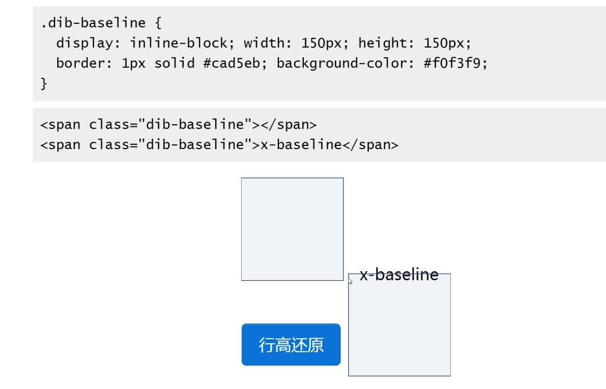

1.基线：平时写英文单词，对于a,c,e这种只占1个格子的，他们的底边就是基线。基线是任意线定义的根本
2.基线的位置与字体的font-family有关，不同的font-family基线的位置是不同的
3.line-height:行高指两行基线之间的距离
行高 基线主要说明基线的问题是行高的标志
4.line-height 高度机理: 行高=内容区域+行间距；
内容区域=字号+字体；
5.line-height的各种属性normal默认属性和浏览器和字体有关系，number根据font-size有关系，length直接固定具体长度大小（px，pt，em。。。），percent百分比，inherit继承关系
6.body全局数值行高的经验body｛font-size：14px；line-height：1.4286｝是根据20字号下的宋体进行得出来的结论，再次用到了数值和百分比的关系。
7.解决图片下面有空白的bug三种解决方法:图片块状话，图片底线对其，行高为零
8.行内盒子模型：
内容区域 content area
内联盒子 inline box
行内框盒子（由一个个内联盒子构成 line boxes）
包含盒子 containing box
9.内联元素的高度是由行高决定的
行高由于其继承性，影响无处不在，即使单行文本也不例外；
行高只是幕后黑手，高度的表现不是行高，而是内容区域和行间距。
10.多行文本的垂直中:.box{text-align:center; line-height:300px;} .box .text{display:inline-block; line-height:normal; text-align:left; vertical-align:middle;}
11.大小不固定的图片的垂直居中:.box{text-align:center; line-height:300px;} .box img{vertical-align:middle;}
12.vertical-align:middle;只能做到近似居中，因为对齐的线为基线向上1/2 * X处，X对于不同字体的取值不同；
1.vertical-align的属性：
线类（baseline,top,middle,bottom）
文本类：(text-top,text-bottom)
上标下标类：（sub,super）
数值百分比类：（20px,2em,20%,...）
2.vertical-align 的百分比值是相对于 line-height 计算的
3.css 中支持负值的属性不多:margin letter-spacing word-spacing vertical-align
4.vertical- align–数值：在Baseline对齐的基础上、上下偏移对应的数值
5.vertical-align – 百分比：在Baseline对齐的基础上,相对行高line-height偏移。
6.IE6/7下vertical-align百分比值不支持小数line-height
7.vertical-align实现前提：
元素不能是block
table-cell 的vertical-align 只会作用于自身,
对他里面的子元素不起作用
vertical-align 应用于inline 水平（inline & inline-block）和 table-cell 元素
绝对定位会脱离文档流，也会导致verticle-align失效
display:inline-block;既能支持inline,又能设置高度。
8.使图片与容器完美结合：
img 设置为 display:block; margin: 0 auto
vertical-align: top/middle/bottom
line-height: 0
font-size: 0
9.上图第一个盒子的基线是自己的底边缘 第二个盒子的基线是里面的元素的x-baseline 的基线
上图x-baseline 的 line-height 为0 时
当一个 inline-block盒子中没有任何元素，它的基线就是盒子的地边缘，如果盒子里面有元素基线就是元素的底边缘，行高有让文字居中的特性，行高设置为0，高度的区域就变为字符的中心了。
10.线性属性值：
inline/inling-block元素：元素底部和整行的底部对齐
Table-cell元素：单元格底padding边缘和表格行底部对齐
11.文本类属性值：
使用基线定位问题在于图标偏上；使用顶线/底线的问题在于受其他内联元素的影响；使用中线需要恰好的文字大小以及兼容性要求不高；使用文本底部较合适，不受行高和其他内联元素的影响vertical-align:text-bottom
12.vertical-align:top是与父容器相关的,只关注当前元素和父级,前后元素没有直接的影响 默认是基线对齐,盒子的底部和父级content area的底部对齐
1.relative与absolute的关系 限制left、top、right、bottom定位； 限制z-index层级； 限制overflow: hidden对absolute元素无效； 2.外层relative的z index无视内层z index 3.relative相对自身的定位 4.relative的z-index:auto不限制下级的absolute的z-index的 5.relative要遵循避免原则和最小化原则，即能不用relative则不用，relative作用的div范围越小越好